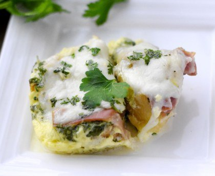

Gâteau de pain perdu salé
Ingrédients
×
- 2 oeufs
- 20 cl de crème fraîche épaisse
- 20 cl de lait
- 1 c. à s. de persil ou cerfeuil
- sel
- poivre
- 0.75 de baguette
- 3 tranches de jambon
- 2 boules de mozzarella

Préparation
Étape 1
Préchauffer le four à 180ºC. Mélanger 2 oeufs, 20 cl de crème fraîche épaisse et 20 cl de lait. Ajouter 1 c. à s. de persil ou cerfeuil ciselé, du sel et du poivre.
Étape 2
Couper 0.75 de baguette en tranches épaisses et les tremper dans la préparation jusqu’à ce qu’elles soient bien imbibées.
Étape 3
Disposer le pain dans un plat à gratin beurré, parsemer de 3 tranches de jambon en lanières et couvrir de 2 boules de mozzarella en tranches.
Étape 4
Verser le reste de la préparation et cuire 25min.
Résumé
2 oeufs
20 cl de crème fraîche épaisse
20 cl de lait
1 c. à s. de persil ou cerfeuil
sel
poivre
180ºC Mélanger
0.75 de baguette
tremper
3 tranches de jambon
2 boules de mozzarella
parsemer
cuire